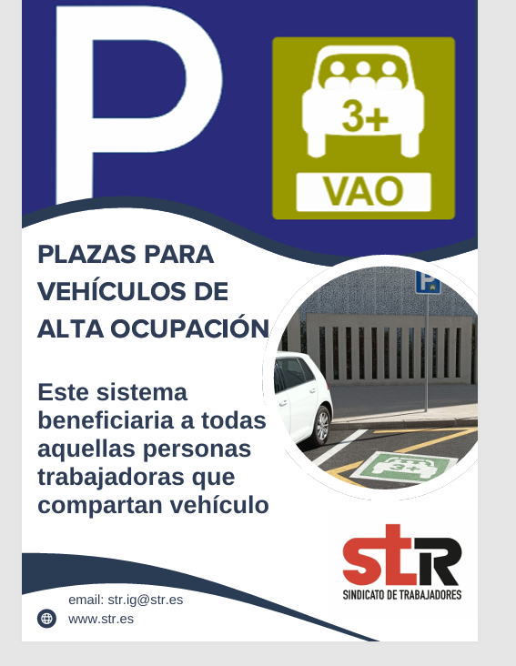

Más detalle
Plazas VAO: más detalle
Qué proponemos y qué trabas hay
¿Qué proponemos?
Reservar plazas de aparcamiento, las más cercanas a la entrada, para vehículos que lleguen con 3 o más personas trabajadoras.
¿Por qué beneficiaría a la plantilla?
- Menos gasto en combustible por persona
- Menos coches y menos presión sobre el aparcamiento
- Menos huella de carbono
- Menos desplazamientos individuales, y por tanto menos riesgo in itinere
¿Qué traba plantea la empresa?
Seguridad cree que las personas no validarán su tarjeta de empleado en la entrada, y que así no se podría comprobar la ocupación.
¿Qué respondemos?
- Proponemos una prueba piloto en las dos plazas antes destinadas a carga eléctrica, enfrente de la garita de seguridad.
- Seguridad puede ver directamente la ocupación de los vehículos.
- Un registro previo de grupos (nombres y matrícula) permite saber quién usa las plazas.
- Quien abuse del sistema pierde el derecho a usarlas.
- Tras unos meses se revisan los resultados con la empresa.
¿Qué pedimos?
Una prueba piloto con un control sencillo, y revisar los resultados en las reuniones trimestrales con dirección.